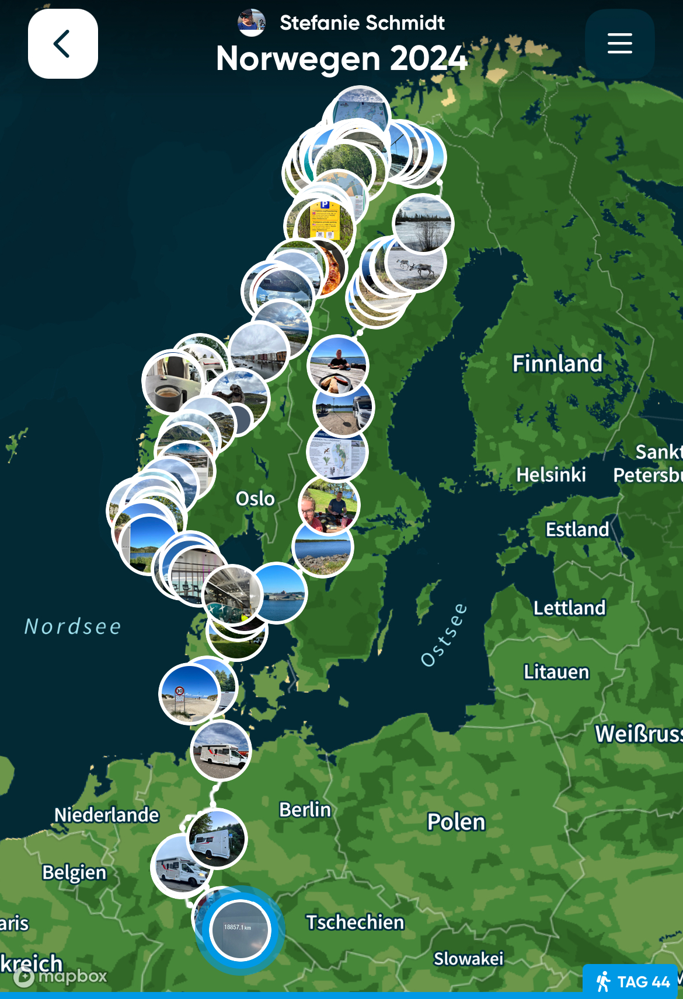
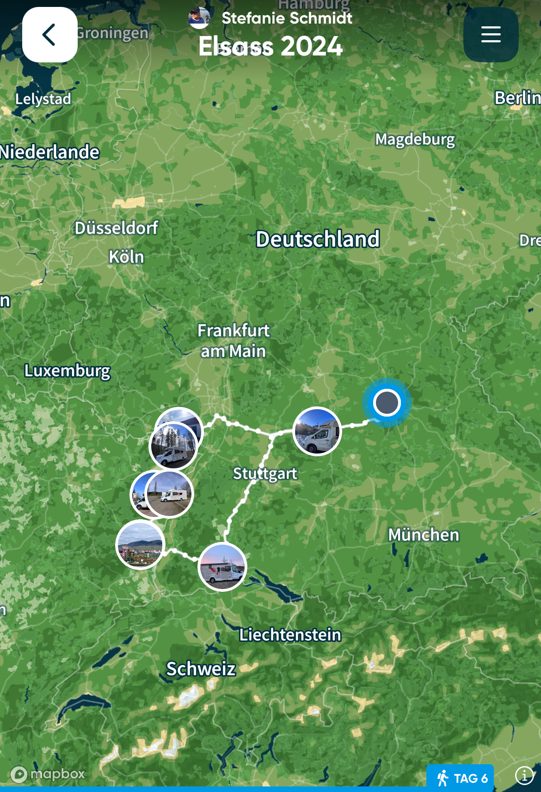
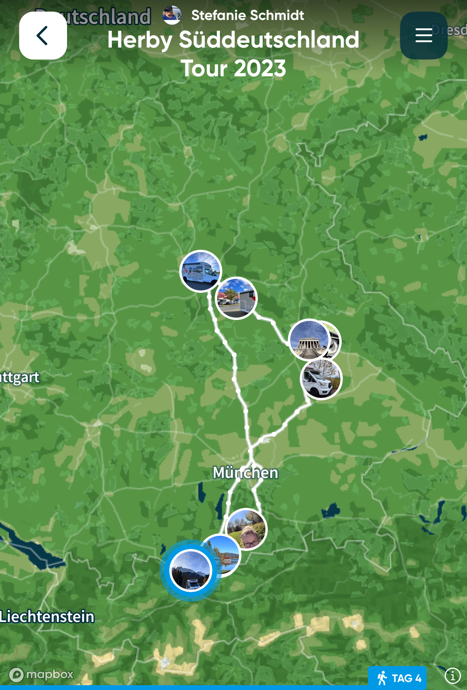
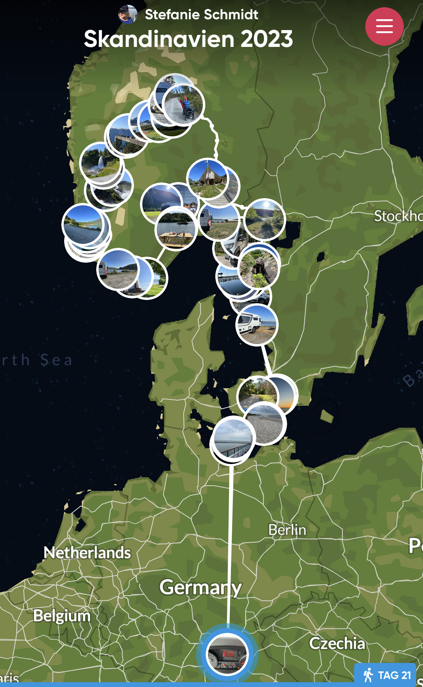
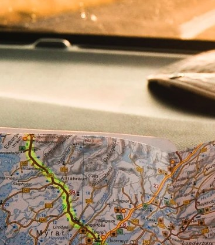

Reiserouten und Planung

2024: Über Dänemark und Schweden in den Norden von Norwegen

2023: Elsass

2023: ein bisschen Bayern erkunden

2023: Westschweden und Südnorwegen

Du weißt noch nicht wohin?